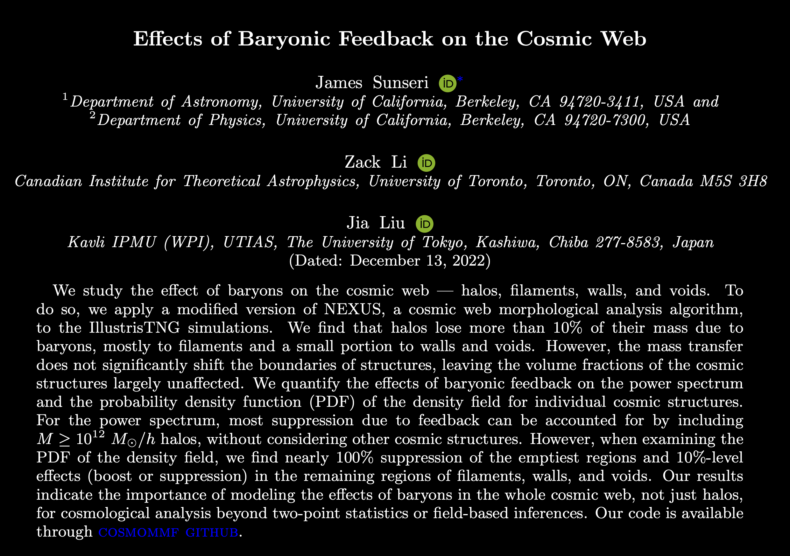

Effects of Baryonic Feedback on the Cosmic Web
I implemented a modified version of the NEXUS+ algorithm for a multiscale morphological analysis of IllustrisTNG simulations. Comparing simulations with and without baryonic matter allowed us to measure the effects of baryonic feedback on large-scale structures in the cosmic web. More details of our work can be found in our paper on ArXiv: CLICK HERE.
The code used for our work is available on the COSMOMMF GITHUB. We implemented the code in the language julia, the code is available as a package CosmoMMF.jl. We show a small summary snapshot of the how the code works. The code is capable of assigning signatures for Cluster, Filament, and Wall type structures in a cosmological simulation, we then use those signatures with physical criterion to identify and tag structures in the simulation. This is shown below. For more details of our findings please see our paper linked above.